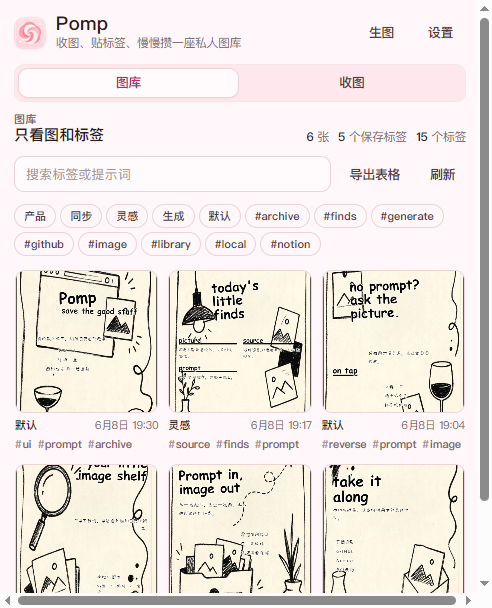
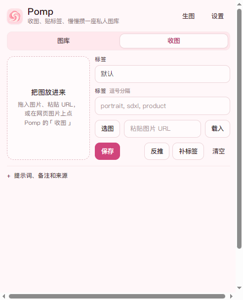

从画面拆出主体、风格、光线和构图线索。
为深夜逛图的人做的小工具
把夜里遇见的好图，认真接住。
Pomp 是一把放在浏览器边上的采集刀。一次右键，或者点一下浮标，就把图片、提示词、来源、分类和标签一起收进私人图库。
- Manifest V3
- Chrome 114+
- Local first
- 数据先留在手边
- OpenAI compatible
- 反推、补标签、生图
Pomp
收图、贴标签、慢慢攒一座私人图库
图库
收图
生成

01
一次右键，把上下文一起收好。
不再先下载、改名、回头找来源。Pomp 把采集动作做短：图像、页面标题、来源 URL、附近提示词和你的备注进入同一条记录。

右键图片
看见喜欢的图，直接收。
浮标收图
不打断浏览节奏，停在页面边上。
手动补录
给未来的自己留一行注释。
02
图库不是文件夹，是记忆索引。
每张图都带着来时的线索：prompt、负面词、来源、分类、标签和备注。需要复盘时，不再只剩一堆文件名。
标签筛选
来源回看
批量导出
详情复盘
03
反推、补标签、生图，都放在手边。
AI 能做的事不另开一套复杂后台。它跟着图库走：从图里拆 prompt，按题材补标签，再把好 prompt 送去生成新图。
按题材、色彩、媒介、风格维度补上可检索标签。
把 prompt 送进兼容 API，结果回到同一座图库。
Local
IndexedDB 与下载目录
GitHub
图片和 JSON 进仓库
Notion
写入数据库继续整理
Feishu
同步到多维表格
没有 Pomp 自有云端。
记录、密钥和同步目标先保存在你的浏览器里；只有你启用 API、导出或远程同步时，相关内容才会发送到你配置的服务。